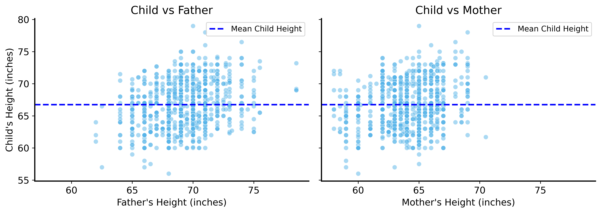
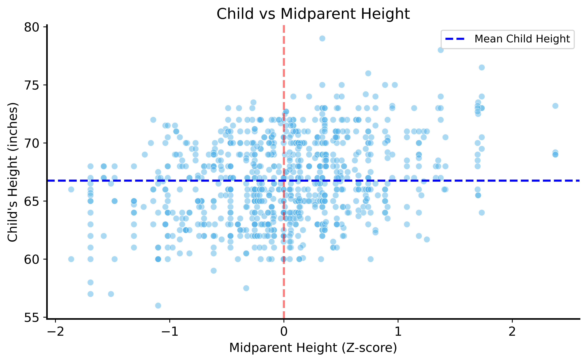
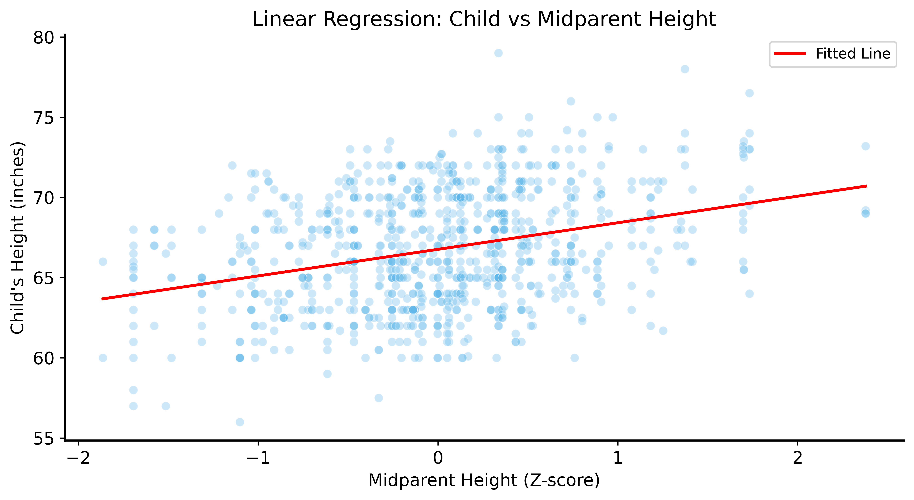
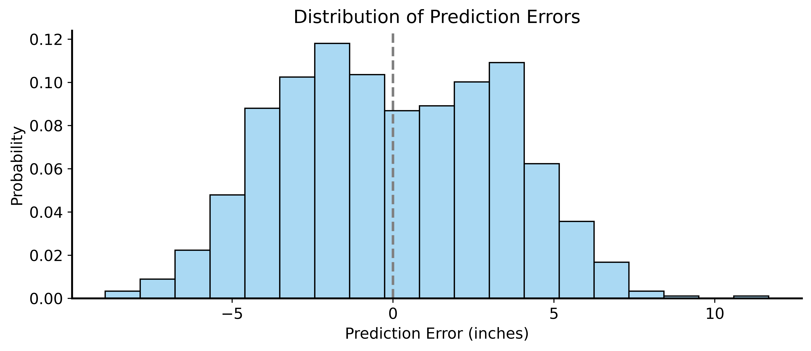
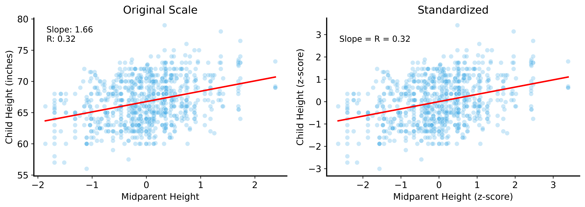

| family | father | mother | gender | height | kids | male | female | |
|---|---|---|---|---|---|---|---|---|
| 0 | 1 | 78.5 | 67.0 | M | 73.2 | 4 | True | False |
| 1 | 1 | 78.5 | 67.0 | F | 69.2 | 4 | False | True |
| 2 | 1 | 78.5 | 67.0 | F | 69.0 | 4 | False | True |
| 3 | 1 | 78.5 | 67.0 | F | 69.0 | 4 | False | True |
| 4 | 2 | 75.5 | 66.5 | M | 73.5 | 4 | True | False |
Lecture 08: Linear Regression
Joseph Rudoler
2026-01-06
From Inference to Prediction
So far we’ve focused on inference:
- Estimating parameters
- Testing hypotheses
- Quantifying uncertainty
Now: Prediction — using data to forecast outcomes
Predictions from Patterns
How do we make predictions?
- Look for patterns in data
- Use patterns to make informed guesses
Why not just memorize?
- Memorization doesn’t generalize
- We need predictions for new, unseen data
The Galton Dataset
Classic dataset: heights of parents and children
The Simplest Prediction
Task: Predict height of a new child (no other information)
Solution: Use the average height!
Mean height: 66.76 inchesDistribution of Heights

Can We Do Better?
What if we have more information?
- Child’s sex
- Parents’ heights
If these are related to height, they should inform our prediction!
Child Height vs Parent Height

The Pattern
Taller parents → taller children (generally)
But how much taller?
We need to quantify this relationship.
Combining Parent Heights
Problem: Father and mother heights are on different scales
Solution: Standardize (z-score) heights
\[z = \frac{\text{height} - \text{mean}}{\text{std dev}}\]
Then combine: midparent height = average of z-scores
Standardization
Child Height vs Midparent Height

Linear Regression
Model the relationship as a line:
\[\text{predicted height} = \text{slope} \times \text{midparent} + \text{intercept}\]
Ordinary Least Squares (OLS): Find the line that minimizes squared errors
\[\text{minimize } \sum_i (\text{predicted}_i - \text{actual}_i)^2\]
Why Squared Errors?
- No cancellation of positive/negative errors
- Larger errors are penalized more heavily
- Mathematically convenient (differentiable)
Fitting the Model
Visualizing the Fit

Interpreting the Slope
Slope ≈ 1.7
Interpretation: For every 1 standard deviation increase in midparent height, predicted child height increases by 1.7 inches.
Prediction Errors (Residuals)

Evaluating Predictions
Code
Mean error: -2.43e-14
Root Mean Squared Error: 3.39 inches
Naive RMSE (just use mean): 3.58 inchesUsing parent info improves predictions! (3.39 vs 3.58 inches)
The Probabilistic View
Notice: residuals are approximately normal!
This motivates the probabilistic regression model:
\[Y \sim \mathcal{N}(\beta_0 + \beta_1 X, \sigma^2)\]
The response \(Y\) is a random variable with:
- Mean that depends on \(X\)
- Inherent variability \(\sigma^2\)
Uncertainty in Regression
Because \(Y\) is random:
- Different samples → different estimates of \(\beta_0\), \(\beta_1\)
- Need to quantify uncertainty (next lecture!)
Correlation
Correlation coefficient (\(r\)): measures linear relationship strength
| Value | Interpretation |
|---|---|
| \(r = 1\) | Perfect positive correlation |
| \(r = -1\) | Perfect negative correlation |
| \(r = 0\) | No linear relationship |
Correlation = Standardized Slope
Key insight: When both variables are standardized, the slope equals the correlation!
\[r = \text{slope when } X \text{ and } Y \text{ are z-scored}\]
Demonstration

Galton Data: Correlation

Summary
Linear Regression
- Model relationships as linear equations
- OLS finds the best-fitting line
- Slope quantifies the relationship
Correlation
- Measures linear relationship strength
- Equals slope when variables are standardized
Probabilistic Interpretation
- \(Y\) is a random variable
- Regression estimates expected value given \(X\)
Next Time
Regression Inference and Multiple Regression
- Hypothesis tests for regression coefficients
- Confidence intervals for predictions
- Multiple predictors simultaneously